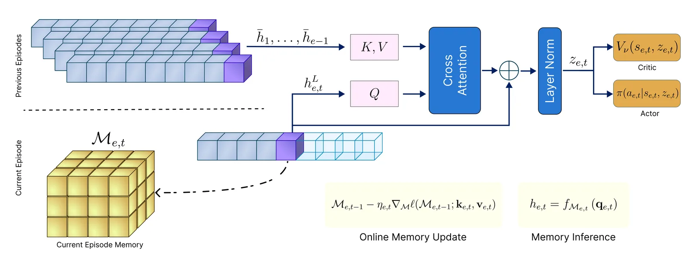
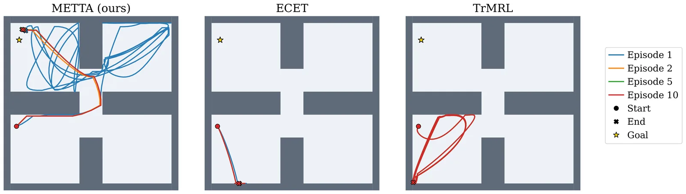
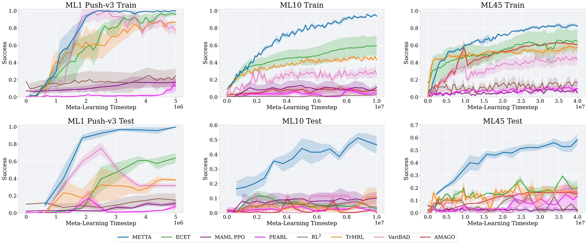
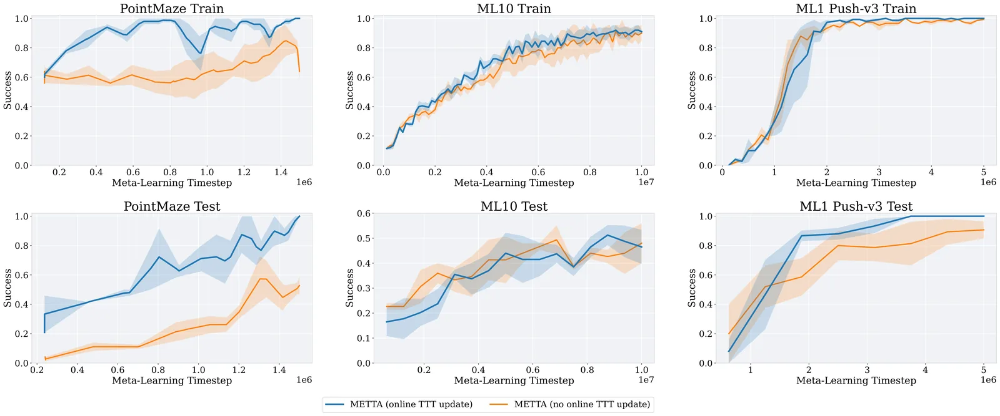

O Problema da Memória Longa em Meta-RL
O Aprendizado por Reforço Meta (Meta-RL) visa treinar agentes que se adaptam rapidamente a tarefas inéditas com pouca interação. O desafio central é representar evidências da tarefa coletadas ao longo de histórias de interação longas. Agentes recorrentes clássicos comprimem essa experiência em estados ocultos, perdendo detalhes finos. Por outro lado, agentes baseados em Transformers usam autoatenção para recuperar trajetórias passadas, mas isso custa computação quadrática O(N²) em relação ao comprimento da sequência. Em ambientes online, onde o contexto cresce com episódios e passos, essa escalabilidade é um gargalo crítico.
A Proposta: METTA
O paper apresenta o METTA (Memory-Enhanced Test-Time Adaptation), uma arquitetura que decompõe a adaptação rápida em duas escalas temporais. Em vez de atender sobre toda a história ou comprimi-la passivamente, o METTA usa uma memória neural causal para adaptação fina dentro do episódio, com complexidade linear. Para inferência de tarefas entre episódios, ele utiliza resumos compactos de nível de episódio. Essa hierarquia temporal permite lidar com contextos longos sem o overhead dos Transformers.

Mecanismo: Memória Neural e Test-Time Training
A inovação chave do METTA reside na atualização da memória em tempo de teste. Diferente de RNNs tradicionais que passam o estado oculto adiante de forma passiva, o METTA realiza atualizações baseadas em gradiente na memória neural durante a inferência. Isso significa que o agente pode ajustar seus parâmetros de memória online para se adaptar a novas tarefas, mesmo que essas tarefas não tenham sido vistas durante o meta-treinamento. Essa capacidade de 'test-time training' fornece uma capacidade expressiva suficiente para inferir variáveis de tarefa a partir de evidências esparsas ou atrasadas.
Complexidade Linear vs. Atenção Quadrática
Enquanto Transformers requerem memória e computação que crescem quadraticamente com o número de passos, o componente de memória neural do METTA opera com complexidade linear. Isso é crucial para Meta-RL online, onde o horizonte de adaptação pode ser longo. A arquitetura não precisa armazenar ou processar todas as transições passadas explicitamente; ela as sintetiza em um estado de memória atualizado. Isso permite que o agente mantenha uma representação rica da tarefa sem explodir o uso de memória RAM/VRAM, um problema comum em métodos de contexto longo.
Agregação Inter-episódio
Para lidar com tarefas que exigem aprendizado ao longo de múltiplos episódios, o METTA não apenas confia na memória dentro do episódio. Ele gera resumos compactos de nível de episódio que suportam a inferência de tarefas de longo alcance. Esses resumos permitem que o agente conecte evidências de episódios anteriores sem precisar 'atender' sobre a história completa de interações. Essa separação entre adaptação fina (intra-episódio) e inferência de tarefa (inter-episódio) é o que permite a escalabilidade do método.

Resultados em Ambientes de Recompensa Esparsa
Nos testes com o ambiente PointMaze, que possui recompensas esparsas (apenas ao atingir o objetivo), o METTA demonstrou comportamento de exploração mais estruturado. Enquanto baselines como ECET e TrMRL tendem a repetir trajetórias ou cobrir menos área, o METTA mantém uma exploração diversa entre episódios. Métricas como 'Coverage' (fração do labirinto visitada) foram superiores, e o 'Episode Jaccard' (sobreposição entre episódios) foi menor, indicando que o agente não fica preso em loops locais e usa melhor a memória de longo prazo.
Generalização em Meta-World
Os benchmarks do Meta-World (ML1, ML10, ML45) avaliaram a capacidade do agente de manipulação robótica. No ML1, o METTA se adaptou rapidamente. Nos conjuntos ML10 e ML45, que incluem famílias de tarefas não vistas (held-out), o método superou as baselines por uma margem significativa, chegando a uma diferença de ~40% na taxa de sucesso em comparação ao RL2. Isso sugere que a memória neural adaptativa generaliza melhor para famílias de tarefas desconhecidas do que abordagens baseadas em recência ou inferência latente passiva.

Eficiência Computacional e Treinamento
Além da precisão, o METTA mantém um orçamento de treinamento baixo e um tempo de parede curto. A complexidade linear permite que o agente processe sequências mais longas sem a penalidade de custo dos Transformers. Os autores compararam o método com RL2, MAML, PEARL, VariBAD, TrMRL, ECET e AMAGO. O METTA consistently showed superior performance across these diverse baselines, particularly in settings requiring long-context adaptation where memory capacity is tested.
Análise de Ablação
Os autores realizaram ablações para isolar a contribuição da memória neural. A Figura 11 mostra que a atualização online da memória é crucial para o desempenho final. Quando essa atualização é removida ou desacoplada, o desempenho cai significativamente, especialmente em tarefas de longo contexto como o PointMaze. Isso confirma que a capacidade de ajustar a memória em tempo de teste não é apenas um acessório, mas o mecanismo central que permite a adaptação rápida e eficiente.

Limitações e Considerações
Apesar dos resultados promissores, o paper reconhece limitações. O método foi avaliado em conjuntos fixos de tarefas de teste. O futuro trabalho sugere extensões para ambientes contínuos ou não estacionários, onde a estrutura da tarefa ou as dinâmicas mudam ao longo do tempo. Além disso, a estabilidade do treinamento de Transformers em RL é um problema conhecido, e embora o METTA evite a atenção quadrática, a otimização da memória neural ainda requer cuidado com a taxa de aprendizado e a exploração. O paper não aborda explicitamente a escalabilidade para dimensões de estado extremamente altas além dos benchmarks padrão.
Estrutura de Representação Latente
A análise das representações latentes aprendidas (Figura 5) mostra uma estrutura clara. A visualização t-SNE dos vetores de contexto z revela que tarefas semelhantes se agrupam, e há uma separação discernível entre tarefas de treino e teste. A matriz de similaridade cosseno também indica que o modelo aprendeu uma representação robusta da tarefa, capaz de distinguir entre diferentes famílias de tarefas (como 'door-close' vs 'drawer-open') mesmo com pouca interação inicial.
Conclusão
O METTA oferece um caminho eficiente para Meta-RL de contexto longo. Ao decompor a adaptação em memória neural causal (linear) e resumos de episódio, o método supera os gargalos computacionais dos Transformers e as limitações de compressão de RNNs. A capacidade de atualização de memória em tempo de teste permite uma generalização forte para tarefas não vistas. Para desenvolvedores e pesquisadores em RL, o METTA destaca a importância de mecanismos de memória ativos e escaláveis na construção de agentes adaptativos robustos.
O que fica
- METTA separa adaptação intra-episódio (memória neural) e inter-episódio (resumos compactos), evitando o custo quadrático de transformers.
- A atualização de memória em tempo de teste permite generalização forte para famílias de tarefas não vistas durante o treinamento.
- Em benchmarks como Meta-World e PointMaze, o método supera baselines de recorrência e atenção, mantendo complexidade linear.
Paper original: METTA: Memory-Enhanced Test-Time Adaptation for Meta-Reinforcement Learning
Comentários
Nenhum comentário ainda. Seja o primeiro.